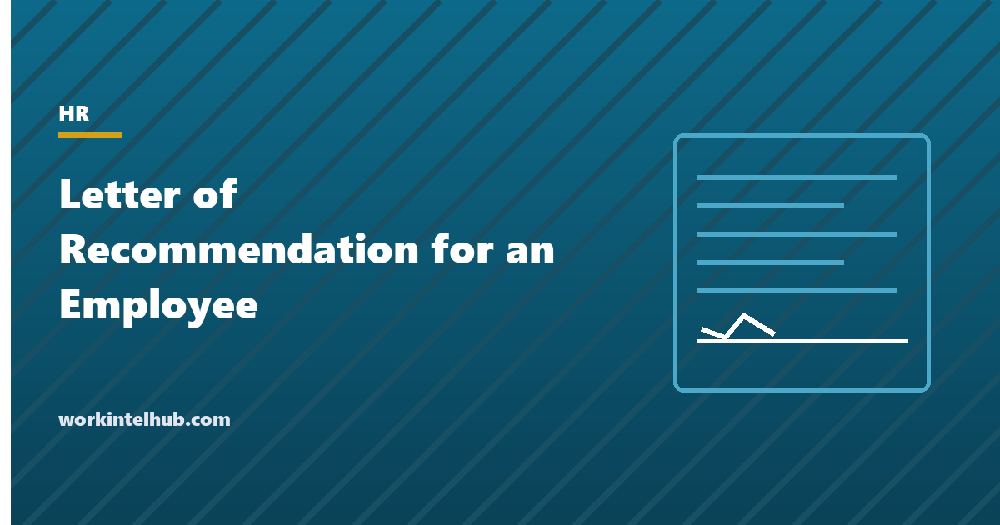

Letter of Recommendation for an Employee

A letter of recommendation for an employee is a manager's or colleague's written case that someone should be hired, promoted, admitted or honoured, built on what the writer saw them do. It differs from an employment verification letter, which confirms dates and title and offers no opinion, and from a reference call, which answers someone else's questions. A recommendation makes an argument, and the argument is only as strong as its examples.
The generator below writes the letter from two examples you supply. The rest of the page covers the structure, sample paragraphs for the common situations, what to leave out, the legal edge in giving one, and when to decline.
Letter of recommendation generator
Nothing typed here leaves your browser. The letter is built from the two examples you give; without them it is a template, and a template is what a reader can tell at a glance.
The structure that works
| Part | Length | What it does |
|---|---|---|
| Opening | Two sentences | Who is being recommended, for what, and your relationship and dates |
| First example | One paragraph | A thing they did, the situation, what happened as a result |
| Second example | One paragraph | A different strength, shown the same way |
| Character line | One sentence | What colleagues would say; optional |
| Endorsement | One or two sentences | "I would hire them again" or the equivalent, stated plainly |
| Contact | One sentence | An invitation to follow up, which readers treat as a signal of sincerity |
One page. Readers of recommendation letters are looking for two things: whether the writer actually knows the person, which the examples establish, and whether the endorsement is unqualified, which the closing establishes. Adjectives establish neither. "Hardworking, dedicated and a team player" is what every letter says; "rebuilt the onboarding process after noticing new hires were taking three months to become productive, and the ramp fell to six weeks" is what one letter says.
Sample paragraphs
For a job application, from a manager. "I managed Priya for three years in customer operations. In her second year she took over the escalations queue when its lead left, without being asked, and within a quarter the average resolution time had fallen from nine days to four. She wrote the escalation playbook we still use. I would hire her again without hesitation."
For a promotion, from a senior colleague. "Marcus led the migration project I sponsored in 2025. When the vendor missed its date, he re-planned the cutover over a weekend, briefed every affected team on Monday morning, and delivered two weeks late instead of two months. He is ready for a role that owns outcomes rather than tasks."
For graduate school, from a manager. "Dana joined us as an analyst and within a year was the person the leadership team asked when the numbers did not add up. Her analysis of our churn data changed the pricing structure, and she taught two colleagues the method. She has the curiosity and the discipline the programme asks for."
For a mixed record, honestly. "Tom's first year with us was uneven, and we discussed it directly. His second year was not: he delivered the reporting overhaul on time, mentored the two new hires, and left the team stronger than he found it. I recommend him on the strength of that year, which is the one that shows what he can do."
The last one is the letter most managers are afraid to write and the one readers trust most, because it shows the writer is not a rubber stamp.
What to leave out
- Anything about protected characteristics. Age, health, family, religion, national origin, disability. "Despite her health problems" or "as a young mother" harms the candidate and exposes the writer.
- Salary. Around twenty states ban salary history inquiries, and a letter that volunteers it undermines the candidate's negotiation.
- Reasons for leaving, unless neutral. The letter is about what they did, not why they went.
- Faint praise. "Satisfactory", "adequate", "met expectations". A reader treats them as code. If that is the honest assessment, decline the letter.
- Comparisons to other named people. Unfair to them and unverifiable.
- The company's confidential information. Results can be described in proportion ("cut resolution time by more than half") without disclosing figures the company would not publish.
- Anything you would not say to the person's face. Recommendation letters are frequently shared with the subject and sometimes required to be.
The legal edge, and when to decline
A recommendation is an opinion, and truthful opinions about job performance are protected in every state, with specific reference-immunity statutes in more than thirty. The exposure runs the other way: a glowing letter for someone dismissed for misconduct, whose next employer suffers harm the letter concealed, has produced negligent-referral claims in a handful of cases, and a letter that contradicts the personnel file is discoverable in any later dispute about that employee. Write what the file supports.
Many employers route all references through HR and bar managers from writing personal recommendations on company letterhead. Check the policy; if it applies, the letter can still be written in a personal capacity, from a personal email, stating the relationship without the company's name at the top. And decline, kindly and early, when the honest letter would be lukewarm: "I do not think I am the right person to write this" is a service to the candidate, who can then ask someone who is. The offboarding checklist is where the reference policy is decided; a departing employee should know at that point who will speak for them.
Key takeaways
- A recommendation makes an argument, and the argument is the examples: two specific things the person did, with what happened as a result.
- Structure: opening with relationship and dates, two example paragraphs, an optional character line, an unqualified endorsement, and an invitation to follow up. One page.
- Adjectives without examples read as a template. Faint praise reads as code. Write the mixed record honestly or decline.
- Leave out protected characteristics, salary, reasons for leaving, comparisons to named people and confidential figures.
- Truthful performance opinions are protected; letters that contradict the file or conceal misconduct are the exposure. Write what the file supports.
- Check the company's reference policy; write in a personal capacity if it bars letterhead recommendations.
Frequently asked questions
What should a letter of recommendation for an employee include?
Your relationship to the employee and the dates; two specific examples of what they did and the result; optionally what colleagues would say about them; a plain endorsement such as 'I would hire them again'; and contact details for follow-up. One page. The examples carry the letter.
How is a recommendation letter different from a reference letter?
In practice the terms overlap. A recommendation actively argues for the person for a stated purpose; a reference letter may be a general character or employment reference. Both differ from an employment verification letter, which only confirms facts, and from a reference check, which answers a prospective employer's questions by phone.
Can a manager refuse to write a letter of recommendation?
Yes, and should when the honest letter would be lukewarm or when company policy routes references through HR. Declining early lets the employee ask someone better placed. An unenthusiastic letter does more harm than no letter.
Is it legal to write a negative or mixed recommendation?
Truthful, good-faith statements about job performance are protected by qualified privilege in every state and by reference-immunity statutes in most. The larger risk is the opposite: a glowing letter that conceals known misconduct, or a letter that contradicts the personnel file. Write what the record supports, and decline if you cannot recommend.
Should the letter be on company letterhead?
Only if company policy allows managers to give personal recommendations. Many employers restrict references to HR-confirmed facts. Where that applies, write in a personal capacity from a personal address, describing your relationship to the employee without presenting the letter as the company's view.
How long should a letter of recommendation be?
One page: around 250 to 400 words. Two examples with results, an endorsement and contact details fit comfortably. Longer letters are skimmed, and the reader is looking for the examples and the strength of the closing, not for volume.